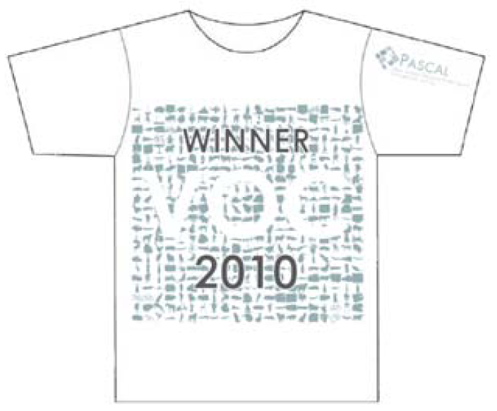
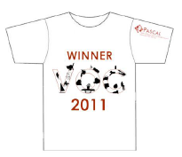

Yinan Yu, Junge Zhang, Yongzhen Huang, Shuai Zheng, Weiqiang Ren, Chong Wang, Kaiqi Huang, Tieniu Tan
|  | The Winner of PASCAL VOC 2010 Detection Challenge
Our method: NLPR_HOGLBP_MC_LCEGCHLC Authors: Yinan Yu, Junge Zhang, Yongzhen Huang, Shuai Zheng, Weiqiang Ren, Chong Wang, Kaiqi Huang, Tieniu Tan Department: National Laboratory of Pattern Recognition, Institute of Automation, Chinese Academy of Sciences |
|---|
| aero | bicycle | bird | boat | bottle | bus | car | cat | chair | cow | table | dog | horse | mbike | person | plant | sheep | sofa | train | tv | mean | |
|---|---|---|---|---|---|---|---|---|---|---|---|---|---|---|---|---|---|---|---|---|---|
| Average Precision (AP%) | 53.3 | 55.3 | 19.2 | 21.0 | 30.0 | 54.4 | 46.7 | 41.2 | 20.0 | 31.5 | 20.7 | 30.3 | 48.6 | 55.3 | 46.5 | 10.2 | 34.4 | 26.5 | 50.3 | 40.3 | 36.8 |
|  | The Winner of PASCAL VOC 2010 Detection Challenge
Our method: NLPR_DD_DC Authors: Junge Zhang, Yinan Yu, Yongzhen Huang, Chong Wang, Weiqiang Ren, Jinchen Wu, Kaiqi Huang, Tieniu Tan Department: National Laboratory of Pattern Recognition, Institute of Automation, Chinese Academy of Sciences |
|---|